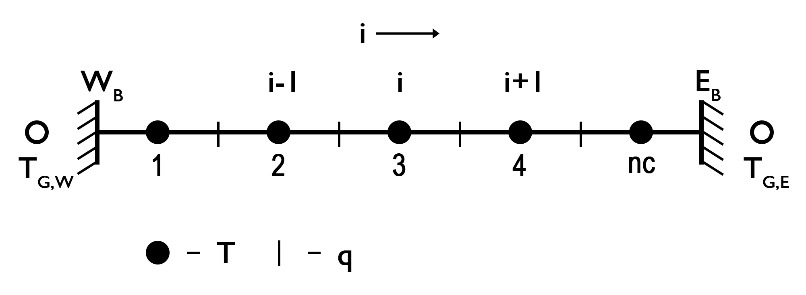
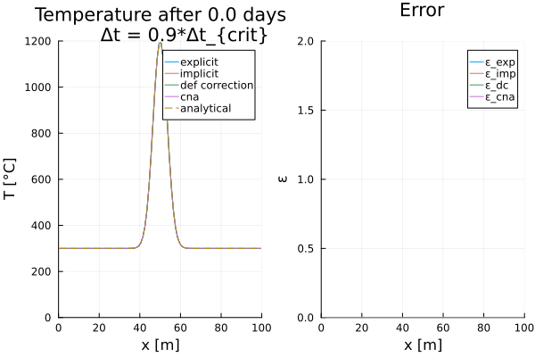

Temperature Equation (1D)
In one dimension, the conductive part of the temperature conservation equation, or temperature equation is described by (assuming only radiogenic heat sources):
\[\begin{equation} \frac{\partial T}{\partial t} = -\frac{\partial q_x}{\partial x} + \rho H, \end{equation}\]
or including Fourier’s law (assuming variable thermal parameters):
\[\begin{equation} \frac{\partial T}{\partial t} = \frac{\partial}{\partial x} k_x \frac{\partial T}{\partial x} + \rho H. \end{equation}\]
Assuming that the thermal parameters are constant, equation $(2)$ simplifies to:
\[\begin{equation} \frac{\partial T}{\partial t} = \kappa \frac{\partial^2 T}{\partial x^2} + \frac{Q}{\rho c_p}, \end{equation}\]
where $\kappa = k/\rho /c_p$ is the thermal diffusivity [ m<sup>2</sup>/s ] and $Q=\rho H$ is the heat production rate per volume [W/m<sup>3</sup>]. Equation $(3)$ is a parabolic partial differential equation (PDE) which can be solved numerically in different manners, assuming initial and boundary conditions are defined.
First, we would like to discuss a simple, but effective, finite difference method to discretize and solve the equation, that is the forward in time and centered in space (FTCS) method in an explicit manner. This finite difference scheme will converge to the exact solution for small $\Delta x$ and $\Delta t$. The advantage of an explicit description is that it is simple to derive and rather fast computationally. However, it is only numerically stable as long as the heat diffusion stability criterion is fulfilled. The stability criterion can be determined by a Von Neumann stability analysis, which analyzes the growth of an eigenmode perturbation for a certain finite difference approach. In case of an explicit 1-D finite difference approach, the heat diffusion stability criterion is defined as (assuming equal grid spacing):
\[\begin{equation} \Delta t < \frac{\Delta x^2}{2 \kappa}. \end{equation}\]
Thus, the maximum time step is limited by the model’s resolution.
Discretization
To numerically solve equation $(3)$ one needs to discretize the numerical domain and assign the parameters to their corresponding nodes. Note: Even though the thermal conductivity is assumed to be constant (for now), we chose a conservative gridding for the sake of continuity, that is the temperature $T$ is defined on the centroids and the heat flux $q$ in between.

Figure 1. 1-D Discretization. Conservative finite difference grid to solve the 1-D conductive part of the temperature equation. The temperature is defined on the centroids and the heat flux on the vertices. The temperature ghost nodes are used to properly implement Dirichlet and Neumann thermal boundary conditions.
Explicit, FTCS (or Forward Euler Method)
Using an FTCS explicit finite difference scheme to approximate the partial derivatives from equation $(3)$ results in:
\[\begin{equation} \frac{T_{i}^{n+1} - T_{i}^{n} }{\Delta t} = \kappa \frac{T_{i-1}^{n} - 2T_{i}^{n} + T_{i+1}^{n}}{\Delta{x^2}} + \frac{Q_{i}^n}{\rho c_p}, \end{equation}\]
where i is the horizontal index of the numerical finite difference grid, n is the time step index, Δt is the time step, and Δx the width of the grid in horizontal direction. Equation $(5)$ contains know and unknow parameters and one can rearrange them to solve the equation for the unknowns as:
\[\begin{equation} T_{i}^{n+1} = T_{i}^{n} + a \left(T_{i-1}^{n} - 2T_{i}^{n} + T_{i+1}^{n} \right) + \frac{Q_{i}^n \Delta t}{\rho c_p}, \end{equation}\]
where $a = \frac{\kappa \Delta t}{\Delta{x^2}}$. Equation $(6)$ can be solved iteratively for every centroid assuming initial and boundary coniditions are defined. For more details on how this is implemented see 1Dsolvers.jl.
Boundary Conditions
Different thermal boundary conditions can be set for which we utilize the ghost nodes. Here, we focus on two fundamental conditions, the Dirichlet and Neumann boundary conditions. To consider each boundary condition to solve the equations, one needs to define the temperature at the ghost nodes. The Dirichlet boundary condition defines a constant temperature along the boundary, such that the temperatures at the left (west) and right (east) ghost nodes are defined as:
\[\begin{equation} T_{G,W} = 2T_{BC,W} - T_{1}, \end{equation}\]
\[\begin{equation} T_{G,E} = 2T_{BC,E} - T_{nc}, \end{equation}\]
where $T_{G,W}$, $T_{G,E}$ and $T_{BC,W}$, $T_{BC,E}$ are the temperature at the left and right ghost nodes and the constant temperatures at the left and right boundary, respectively, and $nc$ is the number of centroids.
The Neumann boundary condition defines that the variation of a certain parameter does not change across the boundary, that is, for example, the temperature across the boundary or thermal heat flux q through the boundary. The temperature at the ghost nodes is then defined as:
\[\begin{equation} T_{G,W} = T_{1} - c_{W} \Delta{x}, \end{equation}\]
\[\begin{equation} T_{G,E} = T_{nc} + c_{E} \Delta{x}, \end{equation}\]
where
\[\begin{equation} \left. c_{W} = \frac{\partial{T}}{\partial{x}} \right\vert_{W},\ \textrm{and}\ \left. c_{E} = \frac{\partial{T}}{\partial{x}} \right\vert_{E}, \end{equation}\]
are the constant temperature gradients across the left and right boundary, respectively.
Now one can solve equation $(6)$ for each centroid using the defined temperature at the ghost nodes for a certain boundary condition.
Numerical schemes
Within the example code Heat1Ddiscretization.jl different numerical schemes are used to solve the conductive part of the temperature equation (i.e., explicit, implicit, Crank-Nicholson Approach, and defection correction). In the following, we will briefly describe those well-know numerical schemes to solve the conductive part of the temperature equation and briefly discuss their advantages and disadvantages.
Implicit, FTCS (or Backward Euler Method)
The fully implicit finite difference scheme is unconditionally stable and one can use time steps larger than the diffusion stability criterion. In 1-D, the temperature equation is then given as:
\[\begin{equation} \frac{T_{i}^{n+1}-T_{i}^n}{\Delta t} = \kappa \frac{T_{i-1}^{n+1}-2T_{i}^{n+1}+T_{i+1}^{n+1}}{\Delta x^2} + \frac{Q_{i}^n}{\rho c_p}, \end{equation}\]
where n is the current and n+1 the next time step, $\Delta{t}$ is the time step length, $\Delta{x}$ is the horizontal grid spacing, and i is the horizontal index, respectively. Rearranging equation $(12)$ into known and unknown variables, one obtains a linear system of equations in the form of:
\[\begin{equation} -a T_{i-1}^{n+1} + \left(2a + b \right) T_{i}^{n+1} - a T_{i+1}^{n+1} = b T_{i}^n + \frac{Q_{i}^n}{\rho c_p}, \end{equation}\]
where $a = \frac{\kappa}{\Delta{x^2}}$ and $b = \frac{1}{\Delta{t}}$. This is a linear system of equation in the form of $\boldsymbol{A}\cdot x = rhs$, where $\boldsymbol{A}$ is a coefficient matrix (here with three non-zero diagonals), $x$ the unknown vector, and $rhs$ the known right-hand side. We choose to distribute the coefficients in such a way and kept the time step on the right-hand side of the euqation to ensure that the coefficient matrix is the same as used in the defection correction method.
The main advantage of the implicit method is that there are no restrictions on the time step. However, this does not mean that it is more accurate. Taking too large time steps may result in an inaccurate solution for features with small spatial scales.
Boundary Conditions
The temperature on the ghost nodes to solve the equations on the centroids adjacent to the boundary are defined as before (equations $(7)-(10)$ ). To obtain a symmetric coefficient matrix to solve the linear system of euqations, however, one needs to modify the coefficients for the centroids adjacent to the boundary and the corresponding right-hand side, such that the equations are defined as:
Dirichlet
West
\[\begin{equation} \left(3 a + b\right) T_{1}^{n+1} - a T_{2}^{n+1} = b T_{1}^{n} + 2 a T_{BC,W}, \end{equation}\]
East
\[\begin{equation} -a T_{nc-1}^{n+1} + \left(3 a + b\right) T_{nc}^{n+1} = b T_{nc}^{n} + 2 a T_{BC,E}, \end{equation}\]
Neumann West
\[\begin{equation} \left(a + b\right) T_{1}^{n+1} - a T_{2}^{n+1} = b T_{1}^{n} - a c_{W} \Delta{x}, \end{equation}\]
East
\[\begin{equation} -a T_{nc-1}^{n+1} + \left(a + b\right) T_{nc}^{n+1} = b T_{nc}^{n} + a c_{E} \Delta{x}. \end{equation}\]
Defect Correction Method
The defection correction method is an iterative solution, in which the residual of the conductive part of the temperature equation for an initial temperature condition is reduced by a correction term. In case, the system is linear, one iteration is sufficient enough to optain the exact solution.
Theory
The conductive part of the equation, in an implicit form, can be simplified to an equation in the form of:
\[\begin{equation} \boldsymbol{K} \cdot T - b = R, \end{equation}\]
where $\boldsymbol{K}$ is the coefficient matrix, $T$ is the temperature at the new time step, $b$ is a term containing the remaining variables (e.g., the current temperature and the radioactive heat source), and $R$ is the resiual. Assuming an initial temperature guess $T_i$, the initial residual $R_i$ is given by:
\[\begin{equation} R_i = \boldsymbol{K} \cdot T_i - b. \end{equation}\]
Adding a correction term $\delta{T}$ to the initial guess, assuming that it results in zero residual, leads to:
\[\begin{equation} 0 = \boldsymbol{K} \left(T_i + \delta{T} \right) - b = \boldsymbol{K} T_i - b + \boldsymbol{K} \delta{T} = R_i + \boldsymbol{K} \delta{T}, \end{equation}\]
which results in:
\[\begin{equation} R_i = -\boldsymbol{K} \delta{T}, \end{equation}\]
and finally the correction term:
\[\begin{equation} \delta{T} = -\boldsymbol{K}^{-1} R_i. \end{equation}\]
The coefficients of the matrix can be derived, for example, via:
\[\begin{equation} \frac{\partial{T}}{\partial{t}} - \kappa \frac{\partial^2{T}}{\partial{x}^2} = R, \end{equation}\]
\[\begin{equation} \frac{T_i^{n+1}-T_i^{n}}{\Delta{t}} - \kappa \frac{T_{i-1}^{n+1} - 2 T_{i}^{n+1} + T_{i+1}^{n+1}}{\Delta{x}^2} = R, \end{equation}\]
\[\begin{equation} -a T_{i-1}^{n+1} + \left(2 a + b \right) T_{i}^{n+1} - a T_{i+1}^{n+1} - b T_{i}^{n} = R, \end{equation}\]
where
\[\begin{equation} a = \frac{\kappa}{\Delta{x}^2},\ \textrm{and} \ b = \frac{1}{\Delta{t}}. \end{equation}\]
Similar to the implicit FTCS method, one needs to adjust the coefficients for the centroids adjacent to the boundaries (see equations $(14)-(17)$ ), however, no adjustment needs to be made on the right-hand side.
Crank-Nicolson approach (CNA)
The fully implicit FTCS method works well, but is only first order accurate in time. A way to modify this is to employ a Crank-Nicolson time step discretization, which is implicit and, thus, second order accurate in time. In 1-D, equation $(5)$ is then described as:
\[\begin{equation} \frac{T_{i}^{n+1} - T_{i}^{n}}{\Delta t} = \frac{\kappa}{2}\frac{(T_{i-1}^{n+1}-2T_{i}^{n+1}+T_{i+1}^{n+1})+(T_{i-1}^{n}-2T_{i}^{n}+T_{i+1}^{n})}{\Delta x^2}. \end{equation}\]
Rearranging the parameters in knowns and unknows results in a linear system of equations as followed:
\[\begin{equation} -aT_{i-1}^{n+1} + \left(b+2a\right)T_{i}^{n+1} - a T_{i+1}^{n+1} = aT_{i-1}^{n} + \left(b-2a\right)T_{i}^{n} + a T_{i+1}^{n}, \end{equation}\]
where $a = \frac{\kappa}{2\Delta{x^2}}$ and $b = \frac{1}{\Delta{t}}$.
Similar to the implicit FTCS method, we need to modify the coefficients of the matrix and the right-hand side using different boundary conditions to obtain a symmetric coefficient matrix. Thus, the equations for the centroids adjacent to the boundaries are defined as:
Dirichlet West
\[\begin{equation} \left(b + 3 a \right) T_{1}^{n+1} - a T_{2}^{n+1} = \left( b - 3 a \right) T_{1}^{n} + a T_{2}^{n} + 4 a T_{BC,W} \end{equation}\]
East
\[\begin{equation} -a T_{nc-1}^{n+1} + \left(b + 3 a \right) T_{nc}^{n+1} = a T_{nc-1}^{n} + \left( b - 3 a \right) T_{nc}^{n} + 4 a T_{BC,E} \end{equation}\]
Neumann
West
\[\begin{equation} \left(b+a\right)T_{1}^{n+1} - a T_{2}^{n+1} = \left(b-a\right)T_{1}^{n} + a T_{2} - 2ac_{W} \Delta{x} \end{equation}\]
East
\[\begin{equation} -a T_{nc-1}^{n+1} + \left(b+a\right)T_{nc}^{n+1} = a T_{nc-1}^{n} + \left(b-a\right)T_{nc}^{n} + 2ac_{E} \Delta{x} \end{equation}\]
However, the band-width of the coefficient matrix increases as in the fully implicit case. Thus, the method becomes memory intensiv for models with a high resoltuion. For more details on how this is implemented, see 1Dsolvers.jl.
For the explicit solver and the defection correction method, we need the extended temperature field, which includes the ghost nodes, to solve the temperature equation. Thereby, we assign the current temperature field to the centroids of the extended field to use it as the old temperature and calculate the temperature at the new time step. For the remaining solvers, we assign the current temperature to the known righ-hand side vector, collect the coefficients for each matrix and solve for the unknown temperature.
Examples
Gaussian Diffusion (Heat1Ddiscretization.jl)

Figure .... Diffusion of an initial Gaussian temperature distribution....
Geotherms
The 1-D temperature profiles of a geotherm are calculated by solving the conductive part of the 1-D temperature equation (so far only including a radiogenic heat source) for variable thermal parameters with a proper conserving finite difference scheme. That is, the heat flow is calculated on the vertices and the temperature is defined on the centroids, respectively. The discretization scheme for variable thermal parameters is choosen to solve for a temperature profile of a continental lithosphere with upper, lower crust, and mantle. The 1-D temperature equation is given by:
\[\begin{equation} \rho c_{p} \frac{\partial{T}}{\partial{t}} = \frac{\partial{}}{\partial{y}}\left(k \frac{\partial{T}}{\partial{y}}\right) + \rho H, \end{equation}\]
where $\rho, c_{p}, T, t, k, H,$ and $y$ are the density [kg/m<sup>3</sup>], the specific heat capacity [J/kg/K], the temperature [K], the time [s], the thermal conductivity [W/m/K], the heat generation rate per mass [W/kg], and the depth [m] respectively. For values and references of the given thermal parameters see OceanicGeotherm_1D.jl and ContinentalGeotherm_1D.jl.
A proper conservative finite difference scheme means that the 1-D vertical heat flux and the thermal conductivity k are defined on the vertices and q is defined as:
\[\begin{equation} \left. q_{y,m} = -k_m \frac{\partial T}{\partial y}\right\vert_{m},\ \textrm{for}\ m = 1:nv, \end{equation}\]
where $nv$ is the number of vertices.
***Solving the equation***
 Following the discretization as described above, one needs to solve the following equation for each centroid (in an explicit finite difference formulation):
\[\begin{equation} \rho_j c_{p,j} \frac{T_{j}^{n+1} - T_{j}^{n}}{\Delta{t}} = -\frac{q_{y,j+1}^{n} - q_{y,j}^{n} }{\Delta{y}} + \rho_j H_j,\ \textrm{for}\ j = 1:nc, \end{equation}\]
where $T$ is defined on the centroids, $q$ and $k$ are defined on the vertices, $\Delta{t}$ is the time step length, and $\Delta{y}$ is the grid resolution. Further replacing q results in:
\[\begin{equation} \rho_j c_{p,j} \frac{T_{j}^{n+1} - T_{j}^{n}}{\Delta{t}} = \frac{ k_{j+1} \frac{T_{j+1}^{n} - T_{j}^{n}}{\Delta{y}} - k_{j} \frac{T_{j}^{n} - T_{j-1}^{n}}{\Delta{y}} }{\Delta{y}} + \rho_j H_j \end{equation}\]
Sorting the variables (known variables on the right-hand side, unknown on the left-hand side) results in:
\[\begin{equation} T_{j}^{n+1} = ak_{j}T_{j-1}^{n} + \left(1-a\left(k_{j+1}+k_{j}\right)\right)T_{j}^{n} + ak_{j+1}T_{j+1}^{n} + \frac{H_j\Delta{t}}{c_{p,j}}. \end{equation}\]
For the centroids adjacent to the boundaries one needs to use the ghost nodes and their correspondingly calculated temperatures, depending on the choosen thermal boundary condition (see equations $(7)-(10)$).
Oceanic

Figure ... ...
Figure .... Oceanic Lithosphere. LEFT: Temperature profile [K] for an oceanic lithosphere of 60 Ma of age and constant thermal boundary conditions at the top and bottom. The blue line shows the initial temperature profile. The yellow dashed line shows the solution for a half-space cooling model. RIGHT: Heat flux q<sub>y</sub> [mW/m<sup>2</sup>] with depth. The parameters of this model are defined as the default values in the routine OceanicGeotherm_1D.jl.
Continental

Figure ... ...

Figure .... Continental Lithosphere. LEFT: Temperature profile for a continental lithosphere of 1000 Ma of age with constant upper and lower thermal boundary conditions. MIDDLE: Heat flux with depth. RIGHT: Thermal parameter for the lithosphere setup: thermal conductivity [k], specific heat [c<sub>p</sub>], density [ρ], and volumetric heat generation rate [Q].
Directory Content
-> Solving the time-dependent diffusion of an initial Gaussian temperature distribution using different numerical finite difference schemes and comparing the results with the analytical solution.
-> Script to calculate the 1-D oceanic geotherm.
-> Script to calculate the 1-D continental geotherm.